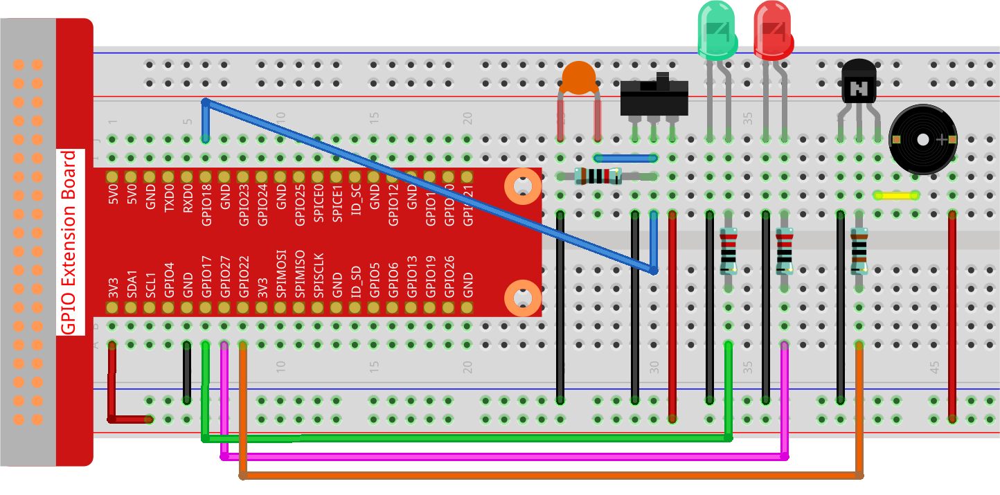

Bemerkung
Hallo und willkommen in der SunFounder Raspberry Pi & Arduino & ESP32 Enthusiasten-Gemeinschaft auf Facebook! Tauchen Sie tiefer ein in die Welt von Raspberry Pi, Arduino und ESP32 mit anderen Enthusiasten.
Warum beitreten?
Expertenunterstützung: Lösen Sie Nachverkaufsprobleme und technische Herausforderungen mit Hilfe unserer Gemeinschaft und unseres Teams.
Lernen & Teilen: Tauschen Sie Tipps und Anleitungen aus, um Ihre Fähigkeiten zu verbessern.
Exklusive Vorschauen: Erhalten Sie frühzeitigen Zugang zu neuen Produktankündigungen und exklusiven Einblicken.
Spezialrabatte: Genießen Sie exklusive Rabatte auf unsere neuesten Produkte.
Festliche Aktionen und Gewinnspiele: Nehmen Sie an Gewinnspielen und Feiertagsaktionen teil.
👉 Sind Sie bereit, mit uns zu erkunden und zu erschaffen? Klicken Sie auf [hier] und treten Sie heute bei!
3.1.10 Alarmglocke
Einführung
In diesem Projekt werden wir ein manuelles Alarmsystem erstellen. Sie können den Kippschalter durch einen Thermistor oder einen lichtempfindlichen Sensor ersetzen, um einen Temperaturalarm oder einen Lichtalarm zu realisieren.
Benötigte Komponenten
Für dieses Projekt benötigen wir folgende Komponenten.

Schaltplan
T-Board Name |
physisch |
wiringPi |
BCM |
GPIO17 |
Pin 11 |
0 |
17 |
GPIO18 |
Pin 12 |
1 |
18 |
GPIO27 |
Pin 13 |
2 |
27 |
GPIO22 |
Pin 15 |
3 |
22 |

Experimentelle Verfahren
Schritt 1: Bauen Sie den Schaltkreis.
Schritt 2: Wechseln Sie das Verzeichnis.
cd ~/davinci-kit-for-raspberry-pi/python-pi5
Schritt 3: Ausführen.
sudo python3 3.1.10_AlarmBell_zero.py
Nach dem Start des Programms wird der Kippschalter nach rechts umgelegt, und der Summer gibt Alarmtöne aus. Gleichzeitig blinken die rote und grüne LED in einem bestimmten Rhythmus.
Warnung
Wenn die Fehlermeldung RuntimeError: Cannot determine SOC peripheral base address angezeigt wird, lesen Sie bitte Wenn gpiozero nicht funktioniert.
Code
Bemerkung
Sie können den untenstehenden Code modifizieren/zurücksetzen/kopieren/ausführen/stoppen. Bevor Sie dies tun, sollten Sie jedoch zum Quellcodepfad wie raphael-kit/python-pi5 wechseln.
#!/usr/bin/env python3
from gpiozero import LED, Button, TonalBuzzer
import time
import threading
# Initialisierung des TonalBuzzers an GPIO-Pin 22
BeepPin = TonalBuzzer(22)
# Initialisierung der LEDs an GPIO-Pins 17 und 27
ALedPin = LED(17)
BLedPin = LED(27)
# Initialisierung des Schalters an GPIO-Pin 18
switchPin = Button(18)
# Globaler Schalter zur Steuerung des Zustands des Buzzers und der LEDs
flag = 0
def ledWork():
"""
Steuert das Blinkmuster der LEDs basierend auf dem Zustand des Schalters.
Wenn der Schalter gesetzt ist, blinken die LEDs abwechselnd.
"""
while True:
if flag:
# Alternierendes Blinken der LEDs
ALedPin.on()
time.sleep(0.5)
ALedPin.off()
BLedPin.on()
time.sleep(0.5)
BLedPin.off()
else:
# Beide LEDs ausschalten, wenn der Schalter nicht gesetzt ist
ALedPin.off()
BLedPin.off()
# Definition der Melodie als Liste von Noten und deren Dauer
tune = [
('C4', 0.1), ('E4', 0.1), ('G4', 0.1),
(None, 0.1),
('E4', 0.1), ('G4', 0.1), ('C5', 0.1),
(None, 0.1),
('C5', 0.1), ('G4', 0.1), ('E4', 0.1),
(None, 0.1),
('G4', 0.1), ('E4', 0.1), ('C4', 0.1),
(None, 0.1)
]
def buzzerWork():
"""
Spielt eine Melodie mit dem Summer, basierend auf dem Zustand des Schalters.
Die Melodie wird nur gespielt, wenn der Schalter gesetzt ist.
"""
while True:
for note, duration in tune:
if flag == 0:
break
print(note) # Aktuelle Note in der Konsole ausgeben
BeepPin.play(note) # Aktuelle Note abspielen
time.sleep(duration) # Für die Dauer der Note pausieren
BeepPin.stop() # Summer nach dem Spielen der Melodie stoppen
def main():
"""
Überwacht das Drücken des Schalters, um den Zustand des Schalters zu aktualisieren.
Setzt den Schalter, wenn der Knopf gedrückt wird.
"""
global flag
while True:
flag = 1 if switchPin.is_pressed else 0
try:
# Initialisierung und Start der Threads für Summer- und LED-Steuerung
tBuzz = threading.Thread(target=buzzerWork)
tBuzz.start()
tLed = threading.Thread(target=ledWork)
tLed.start()
main()
except KeyboardInterrupt:
# Stoppen des Summers und Ausschalten der LEDs bei Programmabbruch
BeepPin.stop()
ALedPin.off()
BLedPin.off()
Code-Erklärung
Dieser Abschnitt beinhaltet den Import wesentlicher Bibliotheken zur Implementierung von Verzögerungen und Threading. Es werden auch die Klassen LED, Button und TonalBuzzer aus der gpiozero-Bibliothek importiert, die für die Steuerung von GPIO-Geräten auf einem Raspberry Pi entscheidend sind.
#!/usr/bin/env python3 from gpiozero import LED, Button, TonalBuzzer import time import threading
Stellt einen Summer an GPIO-Pin 22, zwei LEDs an GPIO-Pins 17 und 27 ein und initialisiert einen Knopf an GPIO-Pin 18. Ein globaler Schalter wird ebenfalls definiert, um den Zustand des Buzzers und der LEDs zu verwalten.
# Initialisierung des TonalBuzzers an GPIO-Pin 22 BeepPin = TonalBuzzer(22) # Initialisierung der LEDs an GPIO-Pins 17 und 27 ALedPin = LED(17) BLedPin = LED(27) # Initialisierung des Schalters an GPIO-Pin 18 switchPin = Button(18) # Globaler Schalter zur Steuerung des Zustands des Buzzers und der LEDs flag = 0
Diese Funktion steuert das Blinken der LEDs basierend auf dem Zustand des Schalters. Wenn der Schalter gesetzt ist (1), wechselt sie abwechselnd zwischen dem Ein- und Ausschalten jeder LED. Wenn nicht gesetzt (0), werden beide LEDs ausgeschaltet.
def ledWork(): """ Steuert das Blinkmuster der LEDs basierend auf dem Zustand des Schalters. Wenn der Schalter gesetzt ist, blinken die LEDs abwechselnd. """ while True: if flag: # Alternierendes Blinken der LEDs ALedPin.on() time.sleep(0.5) ALedPin.off() BLedPin.on() time.sleep(0.5) BLedPin.off() else: # Beide LEDs ausschalten, wenn der Schalter nicht gesetzt ist ALedPin.off() BLedPin.off()
Die Melodie wird als eine Sequenz von Noten (Frequenz) und Dauern (Sekunden) definiert.
# Definition der Melodie als Liste von Noten und deren Dauer tune = [ ('C4', 0.1), ('E4', 0.1), ('G4', 0.1), (None, 0.1), ('E4', 0.1), ('G4', 0.1), ('C5', 0.1), (None, 0.1), ('C5', 0.1), ('G4', 0.1), ('E4', 0.1), (None, 0.1), ('G4', 0.1), ('E4', 0.1), ('C4', 0.1), (None, 0.1) ]
Spielt eine vordefinierte Melodie ab, wenn der Schalter gesetzt ist. Die Melodie stoppt, wenn der Schalter während des Spielens zurückgesetzt wird.
def buzzerWork(): """ Spielt eine Melodie mit dem Summer, basierend auf dem Zustand des Schalters. Die Melodie wird nur gespielt, wenn der Schalter gesetzt ist. """ while True: for note, duration in tune: if flag == 0: break print(note) # Aktuelle Note in der Konsole ausgeben BeepPin.play(note) # Aktuelle Note abspielen time.sleep(duration) # Für die Dauer der Note pausieren BeepPin.stop() # Summer nach dem Spielen der Melodie stoppen
Überprüft kontinuierlich den Zustand des Knopfes, um den Schalter zu setzen oder zurückzusetzen.
def main(): """ Überwacht das Drücken des Schalters, um den Zustand des Schalters zu aktualisieren. Setzt den Schalter, wenn der Knopf gedrückt wird. """ global flag while True: flag = 1 if switchPin.is_pressed else 0
Threads für
buzzerWorkundledWorkwerden gestartet, wodurch sie gleichzeitig mit der Hauptfunktion laufen können.try: # Initialisierung und Start der Threads für Summer- und LED-Steuerung tBuzz = threading.Thread(target=buzzerWork) tBuzz.start() tLed = threading.Thread(target=ledWork) tLed.start() main()
Stoppt den Summer und schaltet die LEDs aus, wenn das Programm unterbrochen wird, um einen sauberen Ausstieg zu gewährleisten.
except KeyboardInterrupt: # Stoppen des Summers und Ausschalten der LEDs bei Programmabbruch BeepPin.stop() ALedPin.off() BLedPin.off()